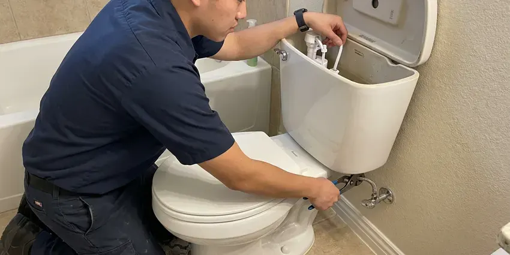
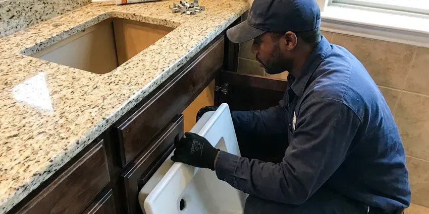

Faucet Repair in Brookline, MA
A drip that keeps you up at night in Brookline, MA is usually a worn cartridge. Our plumbers fix it fast.
- Next-Day Service
- Genuine Parts
- Cartridges for Major Brands
- All Faucet Types

Get Your Faucet Fixed in Brookline, MA
We stop the drip and check the supply lines while we are there.
Local Faucet Repair in Brookline, MA
BWM Plumbing fixes faucets that drip, leak at the handle, wobble on the counter or barely trickle, and we use manufacturer cartridges instead of generic parts. Cheap generic cartridges tend to fail within months. Genuine parts also keep any lifetime warranty valid.
Some of what we do:
- Seat and spring kits for ball faucets
- Fix drips and leaks on every faucet type
- Clear clogged aerators

Additional Bathroom Plumbing Services in Brookline, MA
From toilets to showers, our bathroom plumbing team in Brookline, MA repairs, installs, and replaces every fixture with clean, code-compliant work.


Brookline toilet repair specialists


Customers
Why Choose BWM Plumbing for Faucet Repair in Brookline, MA?
Genuine manufacturer cartridges cost a little more than generic ones, but generics often fail within months and can void a lifetime warranty. Our plumbers install the brand part. Moen, Delta, Kohler and Pfister cartridges are on the truck.
- Clear Pricing, You approve a firm price before work starts.
- Quiet Faucets, No more drip at night.
- Prevent Damage, Early repairs keep water out of the sink cabinet.
Citywide Coverage
Rental owners and property managers across Brookline use us for faucet repairs between tenants and for drips reported mid-lease on short notice. We coordinate with tenants directly. You get an invoice with photos of the work.
Experienced Team
Hard water experience matters on faucet work, because our plumbers know which cartridges keep working with scale in the line and which ones start sticking within a year. They install the durable ones. Brand and model both matter.
Safety-First Approach
All repairs follow plumbing code in Brookline, MA, including the anti-scald limit stops on tub and shower valves that keep hot water from reaching a dangerous temperature. We set them before we leave. Hot and cold also go on the correct sides.
Trusted Certified Brookline Plumbing Services Professionals
At BWM Plumbing, we take pride in licensed, certified plumbing services throughout Brookline, MA. Credentials matter in this trade. Our plumbers hold recognized industry credentials, and they follow strict safety and quality rules on every repair, installation and maintenance call we run.
Call Us Now PHCC Plumbing Contractor Recognition
PHCC Plumbing Contractor Recognition Better Business Bureau (BBB) Accreditation
Better Business Bureau (BBB) Accreditation Angi Certified Pro
Angi Certified Pro ISO 9001 Quality Management Certification
ISO 9001 Quality Management CertificationFaucet Repair Work in Brookline, MA
Compression Faucet Repair in Brookline
Two-handle faucets with separate hot and cold handles are often compression faucets, which seal by pressing a rubber washer down onto a brass seat inside the valve. Over time the washer hardens and the seat wears rough. New washers go in and the seat gets dressed or replaced with a seat wrench, and the packing gets redone if the stem leaks.

Hard Water Faucet Repair in Brookline
Scale is the biggest reason faucet seals wear early, because the mineral crust scratches rubber and keeps ceramic discs from closing flat. It happens faster with hard water. We clean the valve body when the old part comes out, so the new cartridge or washer seals against a smooth surface.
Cracked Faucet Body Repair in Brookline
Cracked faucet bodies, usually from freezing or an old brass casting that finally gave out, cannot be repaired and need a replacement faucet. Turn off the stops under the sink. A new faucet can usually go in on the same visit, and we will check the supply lines and stops while the water is off.
Outdoor Hose Bib Repair in Brookline
Outdoor spigots take a beating from sun and weather. Shutting off and draining outdoor faucets in the fall, and keeping cabinet doors open during cold snaps, avoids a lot of winter damage. We replace packing washers and seat washers on standard hose bibs, and we install frost-free sillcocks with the valve seat inside the warm wall when an old one has split. A vacuum breaker goes on every new one.
Bathroom Faucet Repair in Brookline, MA
Bathroom sinks see less wear than kitchen sinks, but scale still builds up in cartridges, and pop-up drains break at the pivot rod under the sink. Neither one takes long. Cartridges get matched for widespread, centerset and single-hole faucets, and pop-up assemblies are replaced to fit the finish.
Commercial Faucet Repair in Brookline, MA
Restaurant and office faucets cycle hundreds of times a day, so cartridges, handle springs, metering valves and sensor solenoids wear out far faster than they do in a house. Commercial cartridges are on the truck. We set metering faucets to run long enough for a full rinse without wasting water, and we can work after hours.
Specialty Faucet Repair in Brookline, MA
Pot fillers, laundry tub faucets and wall-mount utility faucets each have their own valve styles, and many use compression stems or quarter-turn cartridges that hardware stores do not stock. We bring the common ones. For filtered water faucets, we replace the cartridge or the check valve as needed.

Ball Faucet Repair in Brookline, MA
Ball faucets have a single lever over a domed cap, and the drip usually comes from the two small rubber seats and springs that press against the ball. Most of them just need new seats and springs. Loose handles happen too. Tightening the adjusting ring under the cap usually stops a handle leak.
Faucet Repair Near Me in Brookline, MA
A near-me search turns up call centers that hand your job to whoever is free, but we send our own licensed plumbers across Brookline, MA. The plumber who shows up works for us. They explain the problem before they fix it.
Our plumbers arrive in the window we give you, lay a towel in the sink cabinet and explain what failed in plain words before starting. You approve the price first. Every repair carries our workmanship guarantee.
BWM Plumbing at a Glance
- Licensed and insured plumbers serving Brookline, MA
- Same-day appointments and 24/7 emergency response
- Clear written estimates, no hidden fees
- 4.9-star rated by 434+ Massachusetts customers
Brookline Map
Brookline Information
- Population
- 63,191
- Area codes
- Local
- Service area
- Brookline and towns within a 40 mile drive
- Nearby
- Newton, Cambridge, Somerville, Boston
Cast iron drains, galvanized supply lines and old lead service connections are still common in multi-family houses and older single-family homes. Faucet trouble in Brookline, MA usually traces to how old the fixture is and the water running through it.
Expert Services
Reach out to BWM Plumbing for honest, reliable plumbing from people who know the trade in Brookline, MA.
Our Specialized Plumbing Services in Brookline, MA
At BWM Plumbing, we handle the full list of plumbing services across Brookline, MA. We go from leak detection all the way to full system installations, for homes and commercial buildings, and we do it quickly at a fair price. Here are the core services we offer:


Our Faucet Repair Steps in Brookline, MA
Here is how a faucet repair usually goes, from the call to the last test.
Describe the Problem
Reach us at (857) 335-4894. You answer a few quick questions so the right cartridge comes along.
Diagnose and Price
Our plumber inspects the faucet and the stops and gives you a flat price.
Fix and Check
We swap the failed parts, clean the aerator and check under the sink for leaks.
Frequently Asked Questions About Faucet Repair in Brookline
Most repairs cost $125 to $300 with the cartridge or seals and labor included, and complex kitchen or touchless faucet repairs can run $200 to $400. You pay one flat price. It is set before we start.
Not for replacing parts inside a faucet. Changing the supply lines in the wall or adding a new fixture can bring in a permit under the local code in Brookline, and we will tell you before any work if that applies to your job. Most faucet repairs never get close to that.
Simple cartridge swaps are doable if you get the exact part. Stuck cartridges and leaks under the sink are better left to a plumber.
Low pressure at a single faucet is almost always the aerator or the cartridge. If it is low everywhere, look at the pressure regulator, the supply or aging pipe.
Absolutely. Our workmanship is guaranteed, and parts carry the manufacturer warranty. Should the same leak return, we come back and make it right.
A drip from the spout, water around the handle or base, a handle that is stiff or loose, and a temperature that drifts while you use it are the usual signs. Banging or squealing counts too. So does weak flow from just one faucet.
A worn cartridge, washer or valve seat is behind almost every drip. Scale from hard water wears those parts faster, which is why faucets in some homes start dripping after only a few years while others go a decade or more without trouble. Replacing the worn part stops it.
One to two hours at the most for a standard repair with common parts. An ordered part may mean a short second trip. We try to finish in one, and the truck carries enough stock that most repairs never need a second trip to the supply house.
What Our Customers Say About Our Plumbing Experts

Lisa C.
Water was pouring out from under the washing machine on a holiday weekend. BWM Plumbing talked me through closing the valves over the phone and had a plumber at the house within ninety minutes. It was a burst fill hose.
Emergency Plumbing · Medford, MA
Laura S.
Our 40 gallon tank started leaking from the bottom after thirteen years. The tech hauled the old one out, set a new unit with a fresh expansion tank, and had hot water running in about four hours. He took the old tank with him too.
Water Heater Replacement · Waltham, MAMonica A.
Our water bill nearly doubled in one month with no change in how we used water. The tech checked the meter, heard the leak under the hallway with his equipment, and opened a hole about a foot square. Fixed the same day.
Slab Leak Repair · Brookline, MA
Kevin O.
Before buying our house I paid for a sewer camera inspection. BWM Plumbing found a belly in the line that held standing water about forty feet from the cleanout. We used the video to get the sellers to fix it before closing.
Sewer Camera Inspection · Brookline, MA
Tyler J.
We bought a taller comfort height toilet for my dad, who just had knee surgery. The plumber pulled the old one, found the flange was cracked, and replaced it before setting the new bowl. Took about two hours.
Toilet Installation · Boston, MA
Greg S.
I manage a small strip center with six tenants. BWM Plumbing handles our annual backflow testing and fixed a recurring clog in the shared sewer line that had been backing into the nail salon. Their reports come in clean and on time.
Commercial Plumbing · Waltham, MA